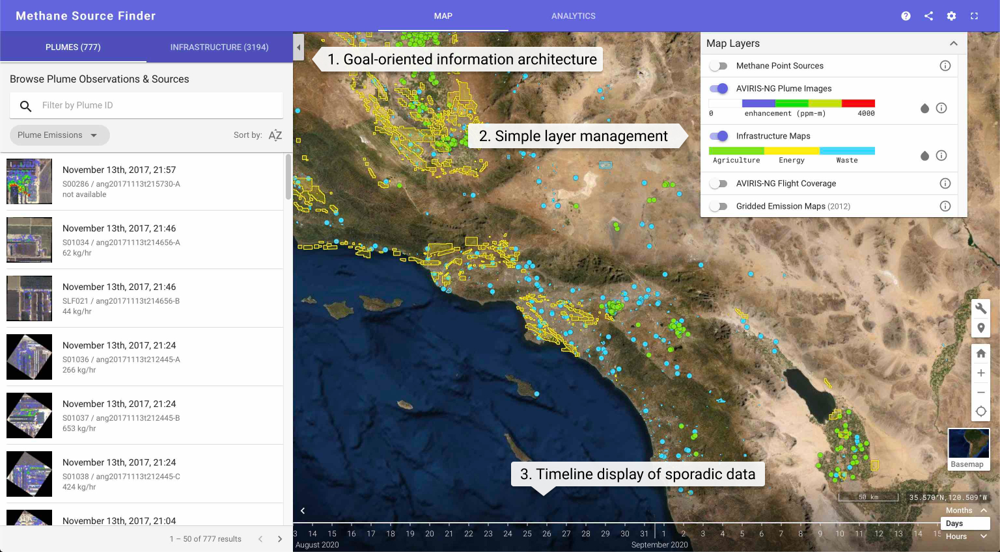

- Product manager and Design Lead
- User research and analysis
- Interaction and User Interface design
- Usability testing
- Requirements development
Methane Source Finder (MSF) is a map-based web application to connect point-sources of methane emissions with nearby infrastructure that may be related to the release of that greenhouse gas. It allows specific types of users to answer questions using searchable lists or a map-based data visualization, or to analyze patterns in the overall data set using an analytics-view.
The target users include engineers and regulators at California agencies that have started to monitor methane, as well as facility operators who are interested in determining whether process improvements might help them reduce methane emissions and avoid product loss (e.g., leaky pipes).
The website was intentionally designed toward goals of regulators and facility operators who want to connect observations of methane emissions to facilities on the ground.
WHY METHANE?
Methane is a greenhouse gas that creates a warming effect that is far stronger than carbon dioxide for equivalent volumes of gas. Methane is also related to some dangerous situations such as gas pipeline leaks that are difficult to detect when they occur in unexpected locations—for example the infamous Aliso Canyon gas leak in 2015.
A very large portion of methane emissions is from so-called "fugitive emissions" from a relatively small number of facilities. This makes it easy to make a big impact by detecting and remediating accidental emissions at a few dozen facilities. Emissions in 2018 were self-reported and based on assumptions rather than actual measurements. A team at NASA-JPL has been conducting airborne observations of methane emissions for a few years in order to help build some empirical evidence for emission-patterns and emission-distribution, as well as a start at understanding natural emissions as compared to industrial emissions.
CONCLUSION AND IMPACT
Several regulatory agencies in California are using MSF to help identify the largest observed emission sources of methane, and to understand its distribution across different industries. It also enhanced the research process for the team generating the data so that data curation and quality control could be done more easily as the data-processing pipeline was developed.
Additional collaborations with facility operators have also used the site to help navigate the various disparate data sets in a seamless way.
When the site launch it had over 2000 users on the first day, which for the team was a surprisingly enthusiastic response for such a niche scientific resource.
The MSF web site was developed along with new analysis methods based on convolutional neural-network (CNN) image analysis of infrared spectroscopy data gathered on an airborne platform—this analysis helps to identify methane point-sources at scale. A team also developed a GIS database of facilities to better understand the potential sources of methane plumes. The web site is designed to integrate these data sets together in a natural way.

Methane Source Finder annotated with some key design features.
DESIGN HIGHLIGHTS
Some key decisions were made to separate the design of this GIS application from other (ostensibly) similar apps developed by our team.
1. There are two tabbed list-views of items on the left: Methane Plumes and Infrastructure. These are the two main types of data that are important to regulators and facilities, and let them quickly answer questions like “what are the largest plumes that have been observed here?” or “what plumes have been observed over my landfill"?”.
2. Unlike most scientific applications that have a large number of layers with relatively obscure names, we have attempted to compress the layer management into a small number of top-level layers with flavors underneath. This is because the expectation is that you will not use this site to do comparisons of several gridded-data layers, but to compare wide-scale data to facilities and point-source emissions. Each layer is designed to answer a specific question that might come to mind when browsing the site.
3. Unlike satellite data, airborne data is very sporadic. We have developed a timeline view that reflects the sporadic nature of the data and which also triggers time-based searches when you click on it—rather than presenting a more complex time-search widget in the text-search area.
4. We also avoided having the user specify the geographic boundaries of queries by simply using the current view as the search area—more akin to Google Maps than to other big-data science applications that our team typically builds.